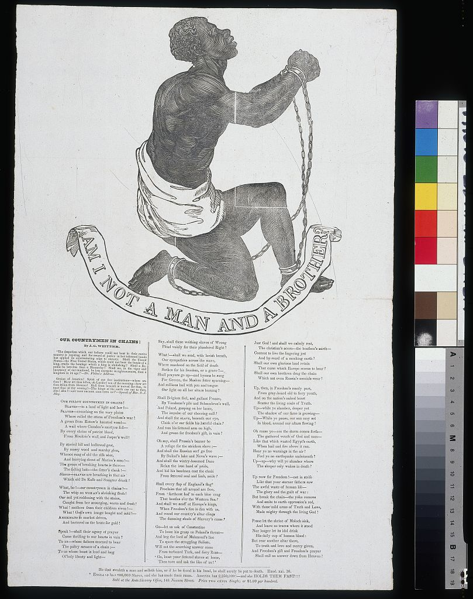

Directions: Read the passage, then answer the questions.

Garrison, 'To the Public,' The Liberator, January 1, 1831, in part. "I shall strenuously contend for the immediate enfranchisement of our slave population. In Park-street Church, on the Fourth of July, 1829, in an address on slavery, I unreflectingly assented to the popular but pernicious doctrine of gradual abolition. I seize this opportunity to make a full and unequivocal recantation ... for having uttered a sentiment so full of timidity, injustice and absurdity."
Source: William Lloyd Garrison, 'To the Public,' 1831, as carried in the audited Primary Source Project bank record (VIVA Pressbooks, American Literature I). Quoted with a cut, marked by ellipses.
1. State the exchange this passage makes. Name the doctrine Garrison recants, the date and occasion of his earlier assent to it, and the demand he contends for in its place.
2. State the judgment Garrison passes on his own earlier position. Give his three words for the sentiment he had uttered, and the form his withdrawal takes, a recantation made where and asking pardon of whom.
3. Put the turn in order. Name the Black writer who spoke first and his year, the pamphlet's audience, and the organization founded in December 1833 and what it was built to do.
4. Work the country's answer. Give the Southampton rising's leader, dates, and toll, the two things Virginia did in the winter after it, and the gag rule's years and working in the House.
1. State the exchange, with the doctrine, the earlier assent, and the demand. Garrison recants the doctrine of gradual abolition, to which he had assented in an address on slavery at Park-street Church on the Fourth of July, 1829. In its place he contends strenuously for the immediate enfranchisement of the slave population. (Blueprint 13)
2. State the judgment, with the three words and the recantation's form. He calls his earlier sentiment full of timidity, injustice, and absurdity. The withdrawal is a full and unequivocal recantation, published in the first issue of his own newspaper, publicly asking pardon of his God, of his country, and of his brethren the poor slaves. (Blueprint 13)
3. Put the turn in order, with the first voice, the audience, and the organization. David Walker spoke first, publishing his Appeal in 1829, addressed to the colored citizens of the world, Black readers rather than white officeholders. In December 1833 Garrison and his allies founded the American Anti-Slavery Society in Philadelphia to carry immediatism into organization, the local societies, print campaigns, and petitions of the decade. (Blueprint 13)
4. Work the answer, with the rising, Virginia's two moves, and the gag. Nat Turner led the Southampton rising of August 21 and 22, 1831, in which about sixty white people were killed. In the winter of 1831 and 1832 Virginia held the South's last open legislative debate on ending slavery and voted it down, and Virginia and the southern states tightened their slave codes against preaching, assembly, and print. The gag rule ran from 1836 to 1844: the House tabled every antislavery petition without printing, reading, or debate, until John Quincy Adams won its repeal. (Blueprint 14)
Teacher note. This check is formative. Questions 1 to 3 carry blueprint entry 13 and test whether students can read the recantation in its own words and place Walker before Garrison. Question 4 carries blueprint entry 14. A student who dates the movement from Garrison's paper alone, without Walker in 1829, has the slogan of the turn rather than its record, and the unit test will price the sequence.